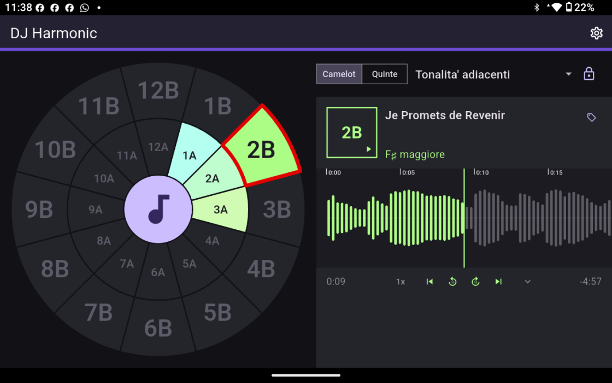
DJ Harmonic liest die Tonart eines Titels und lässt die aufleuchten, die sich daneben legen werden — auf einem Camelot-Rad, das man auf einen Blick liest. Alles geschieht auf dem Telefon: kein Konto, nichts hochzuladen, keine Anmeldung.
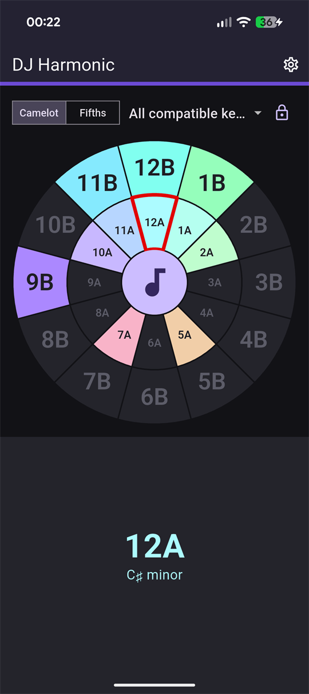
Nichts einzurichten, bevor es losgeht: der Knopf in der Mitte des Rads ist schon die Dateiauswahl.
Tippen Sie auf den Knopf in der Mitte des Rads und wählen Sie eine Datei auf dem Gerät — mp3, m4a, wav oder flac. Der ganze Titel wird gelesen, in wenigen Sekunden, während ein Ring die Arbeit herunterzählt und das Rad wartet.
Das Rad leuchtet wieder auf dem Sektor auf, in dem es gelandet ist, rot umrandet. Das Feld darunter trägt den Camelot-Code und den Akkordnamen, und die Tonart wird in die Tags der Datei geschrieben: Öffnen Sie den Titel wieder, hier oder in einem anderen Programm, und sie ist schon da.
Wählen Sie eine der sechs Regeln, und das Rad lässt nur die Tonarten hell, die diese Regel zulässt, und dunkelt alle anderen ab. Bei geschlossenem Schloss lässt sich eine Tonart, die nicht passt, nicht einmal auswählen.
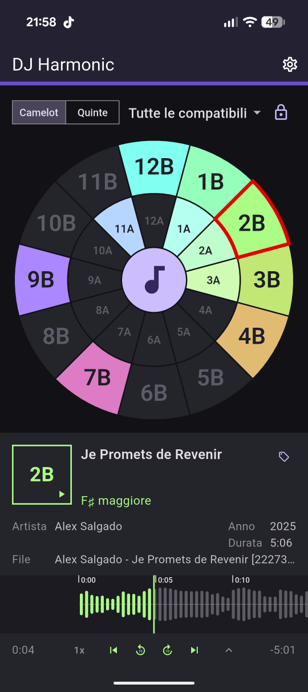
Keine Bibliothek zu importieren, keine Cloud zu synchronisieren, kein Konto anzulegen. Die App öffnet auf dem Rad und bleibt dort.
Die Molltonarten auf dem inneren Ring, die Durtonarten auf dem äußeren, und eine feste Farbe je Tonart. Nach einer Woche liest man die Codes nicht mehr, sondern geht nach der Farbe.
Lesen Sie das Rad als 12A und 1B oder als cis-Moll und G, wie sie im Quintenzirkel stehen. Ein Umschalter oben, und die App öffnet wieder so, wie Sie sie verlassen haben.
Von allen passenden Tonarten bis zu einem einzigen Zug. Die gewählte Regel überlebt das Schließen, denn sie ist Ihre Arbeitsweise und keine zufällig berührte Einstellung.
Geschlossen lässt das Rad nur zu einer Tonart durch, die passt. Offen gehen Sie, wohin Sie wollen. Das ist der Unterschied zwischen Üben und Improvisieren.
Jede Analyse hört den ganzen Titel, mit harmonium, der Tonart-Engine, die für diese App von Grund auf neu geschrieben wurde. Jede Tonart merkt sich, welche Version sie gefunden hat: Ein Titel wird nur neu analysiert, wenn sich die Antwort ändern kann.
Titel, Interpreten, Album, Genre, Jahr und Dutzende weitere kommen aus der Datei und gehen dorthin zurück, wenn Sie sie korrigieren, bei mp3 wie bei wav. Wählen Sie, welche die Titelkarte zeigt; fehlen sie, steht der Dateiname an ihrer Stelle.
Das Tonart-Feld ist der Wiedergabeknopf. Der Titel startet und stoppt dort, ohne zweiten Bildschirm und ohne das Rad zu verlassen.
Die Wellenform des Titels läuft während der Wiedergabe mit, und der schon gespielte Teil nimmt die Farbe an. Ziehen Sie sie, um sich zu bewegen, oder springen Sie in Zehn-Sekunden-Schritten, an den Anfang oder ans Ende.
Deutsch, Englisch, Italienisch, Französisch und Spanisch, hell und dunkel. Beide folgen dem Telefon, bis Sie es anders entscheiden.
Eine Regel ist eine Menge von Zügen auf dem Rad. Wählen Sie eine, und das Rad wird zur Antwort auf eine einzige Frage: Von hier aus, wohin darf ich?
Die vollständige Menge. Alles, was sich neben die Tonart legen wird, auf der Sie stehen — ohne Rangfolge.
Dieselbe Menge ohne den Sprung zwischen den beiden Ringen. Was bleibt, ist der Boden, über den niemand streitet.
Nur die Nachbarn: ein Schritt auf dem Rad oder geradewegs auf den anderen Ring. Der Zug, den man blind macht.
Zwei Schritte hinauf oder zwei hinunter: die Züge, die einen Floor heben, und die, die ihn wieder auf den Boden bringen.
Ein Zug und nur einer, sieben Sektoren entfernt — ein Halbton hinauf. Der älteste Aufschwung, den es gibt.
Drei Sektoren zurück mit Ringwechsel. Weiter von zu Hause, als es aussieht, und dennoch konsonant.
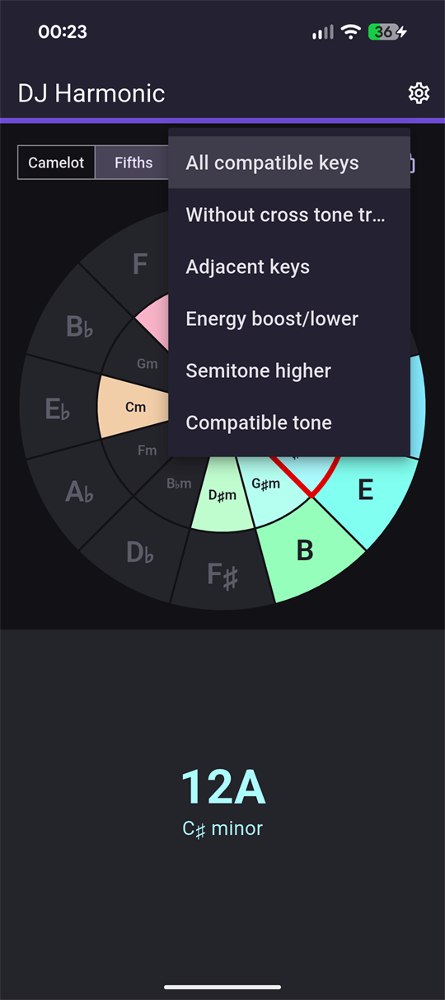
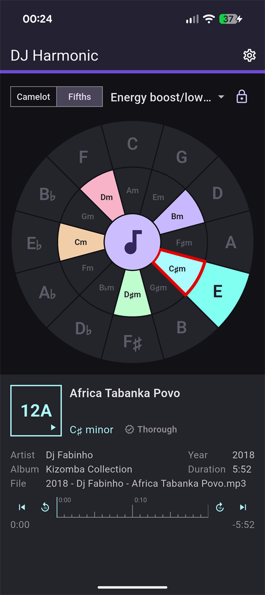
Die Zahl ist die Position im Quintenzirkel, von 1 bis 12; der Buchstabe ist der Ring — A für Moll, B für Dur. Zwei Titel mixen sich, wenn ihre Codes gleich sind, oder um eins auseinanderliegen, oder dieselbe Zahl teilen und den Buchstaben tauschen. Mehr ist die Notation nicht, und das Rechnen übernimmt das Rad.
Das Layout folgt dem Bildschirm, statt für ihn gedehnt zu werden. Auf dem Telefon nimmt das Rad oben Platz und der Titel legt sich darunter. Drehen Sie das Telefon, oder öffnen Sie die App auf einem Tablet, und beide rücken nebeneinander.
Tablet — links das Rad, rechts der Titel
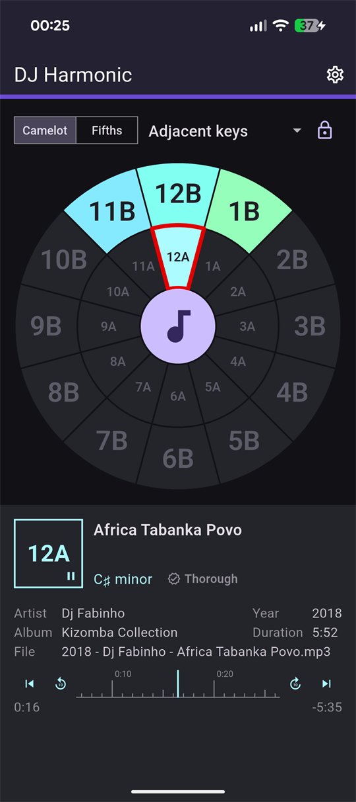
Telefon — zuerst das Rad, darunter der Titel
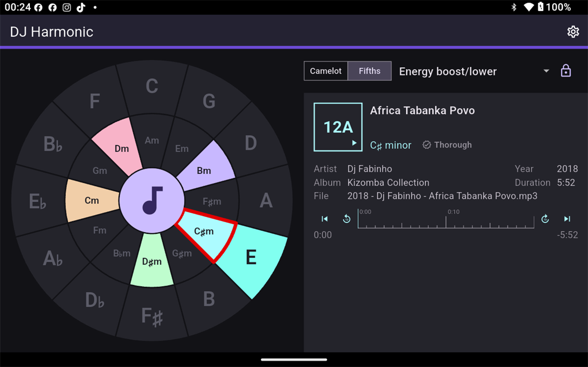
Dieselbe Regel, mit Platz zum Atmen
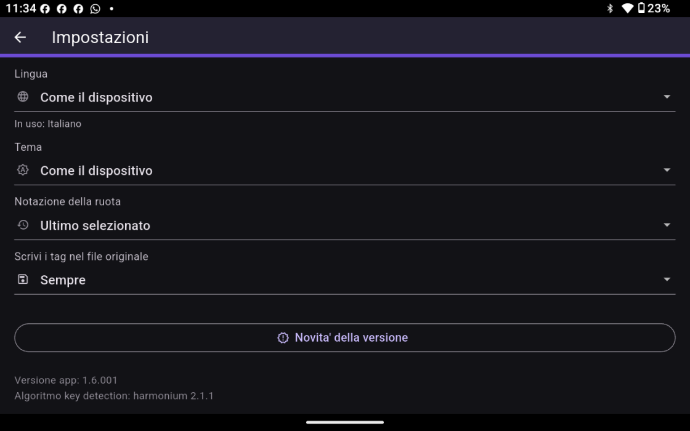
Die Einstellungen, wo immer Sie sie geöffnet haben
Echte Screenshots, nichts gestellt. Zur Seite ziehen.
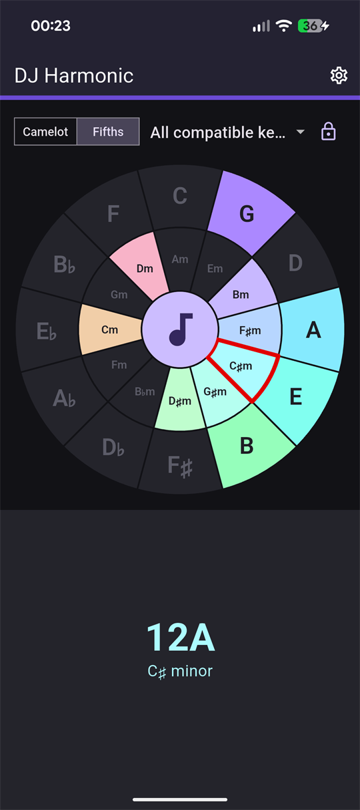
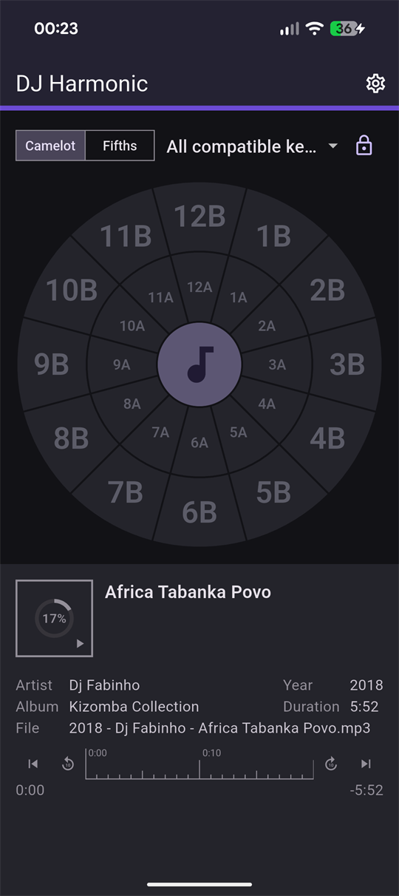
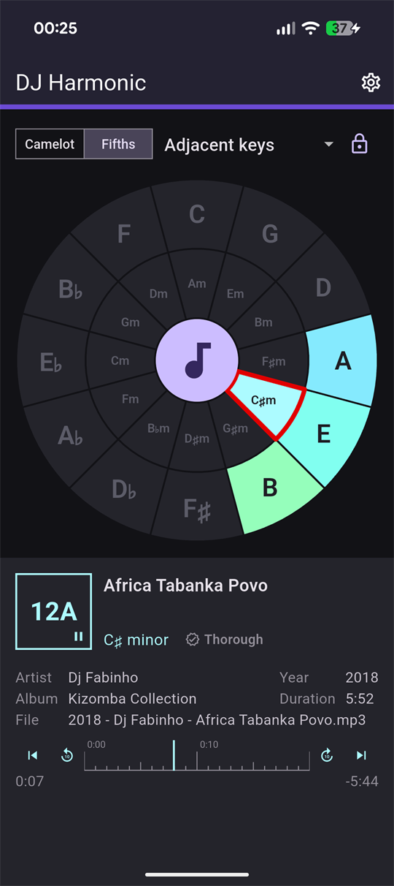
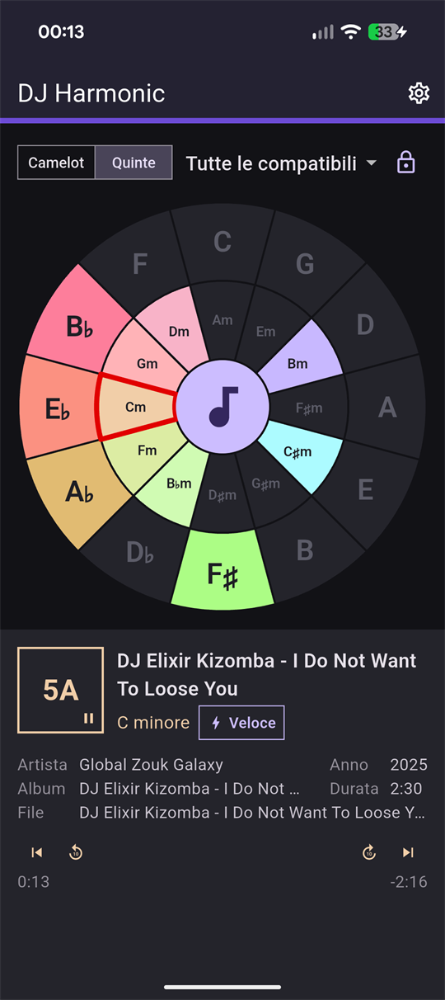
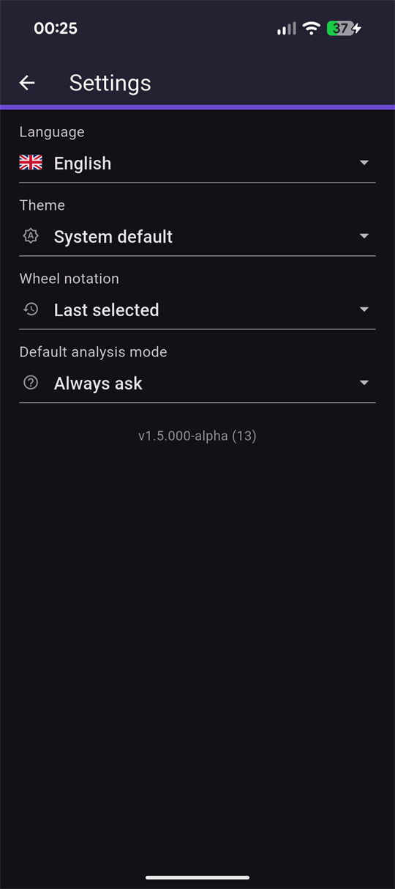
Die Analyse geschieht auf dem Telefon. Die Datei, die Sie wählen, wird dort gelesen, wo sie liegt, und weder sie noch das Ergebnis verlassen jemals das Gerät — es steht kein Server von uns dazwischen, und genau deshalb braucht es auch kein Konto. Vier Formate werden gelesen: mp3, m4a, wav und flac. Alles andere wird abgelehnt statt erraten.
Öffnen Sie das Rad, geben Sie ihm einen Titel, und sehen Sie, wonach er sich legen will.
Jetzt beiGoogle Play